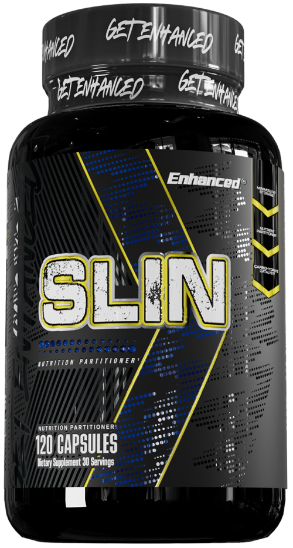

SLIN — Glucose Disposal "Carbs into Muscle"
Product profile · Marketplace data 2026-10-09 · Sales-page research 2026-10-09 · Categories: Food Supplements

Marketplace record
| Product type | Supplements - for slimming |
|---|---|
| Price | $257.28 (Single payment) |
| Affiliate commission | 50% |
| Refund window | Per the vendor's sales page — check the official page before buying |
| Vendor | enhancedlabs (listed since 2024-12-03) |
| Marketplace stats* | Cart conversion — · cancel rate — · affiliate earnings/sale $128.64 |
* Vendor-side marketplace statistics reported by Digistore24; they depend on traffic quality and are not a forecast.
Vendor's marketplace description
Fuel Muscle, Burn Fat, Optimize Every Carb!Turn every meal into muscle-building fuel with SLIN, the cutting-edge nutrient partitioner trusted by athletes and fitness pros. SLIN mimics insulin to shuttle carbs directly into muscles for leaner gains, faster recovery, and ultimate performance—without the fat. Perfect for bulking, cutting, or breaking through plateaus. Why Promote SLIN?✅ Earn up to 60…
From the vendor's sales page
Page title: SLIN (6 bottles + 2 Free Ebooks) - Digistore24
Opening copy
Here’s what you’re getting with your purchase: ✅ Cutting-Edge Glucose Disposal Agent (GDA) Slin is designed to help your body use carbs as fuel instead of storing them as fat, making it the ultimate tool for weight management and performance optimization.
✅ Powerful, Research-Backed Ingredients Formulated with premium compounds like Berberine, Chromium, and Gymnema Sylvestre, Slin support healthy insulin levels, supports appetite control, and improves nutrient partitioning.
✅ Targeted Benefits for Your Goals Whether you're a fitness enthusiast, athlete, or simply health-conscious, Slin helps you:
Prices mentioned on the page: $10 · $230.00 · $0.00 · $230
Guarantee language found: “60” — always confirm the current terms on the official page before relying on it.
Research method: raw HTML fetch · 531 words on page · quality: rich · researched 2026-10-09. Full research file (MD) ↗
Where to check it out
Read the vendor's full sales page (current price, guarantee terms and bonuses are listed there):
View official sales page
That link is an affiliate link — if you buy through it we earn a commission from the vendor at no extra cost to you.